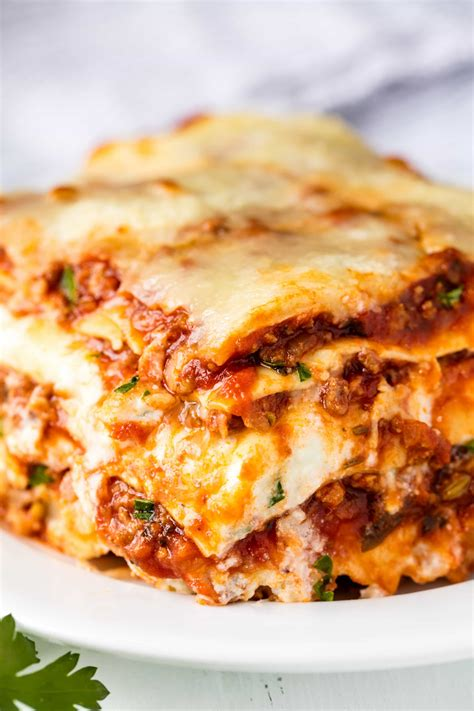

Home
Lasagna

Ingredients
pasta
cheese
tomato sauce
goombah's love
Steps
hand stretch pasta into wavy sheets
layer cheese and sauce onto pasta sheets
bake in oven for like an hour at 400 degrees baby